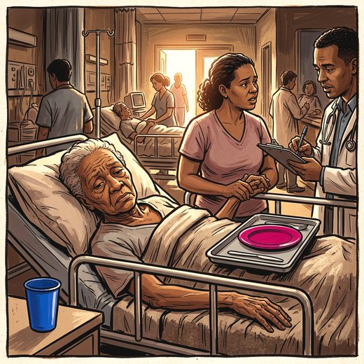

Consulta rápida à beira do leito
Condutas, doses e interações.
Referências da aula · 7
- Muñoz FL, da Cruz RF, Silveira LVA, Diaz MDP. Latent dimension of comorbidities and depression in older adults: a cross-sectional study using National Health Survey data, Brazil, 2019. Epidemiol Serv Saude. 2026;35:e20250722. doi:10.1590/S2237-96222026v35e20250722.pt.DOI
- Kellner CH, Husain MM, Knapp RG, McCall WV, Petrides G, Rudorfer MV, et al. Right unilateral ultrabrief pulse ECT in geriatric depression: phase 1 of the PRIDE study. Am J Psychiatry. 2016;173(11):1101-9. PMID 27418379. doi:10.1176/appi.ajp.2016.15081101.PubMedDOI
- Geduldig ET, Kellner CH. Electroconvulsive therapy in the elderly: new findings in geriatric depression. Curr Psychiatry Rep. 2016;18(4):40. PMID 26909702. doi:10.1007/s11920-016-0674-5.PubMedDOI
- Lam RW, Kennedy SH, Adams C, Bahji A, Beaulieu S, Bhat V, et al. Canadian Network for Mood and Anxiety Treatments (CANMAT) 2023 update on clinical guidelines for management of major depressive disorder in adults. Can J Psychiatry. 2024;69(9):641-87. PMID 38711351. doi:10.1177/07067437241245384.PubMedDOI
- 2023 American Geriatrics Society Beers Criteria Update Expert Panel. American Geriatrics Society 2023 updated AGS Beers Criteria for potentially inappropriate medication use in older adults. J Am Geriatr Soc. 2023;71(7):2052-81. PMID 37139824. doi:10.1111/jgs.18372.PubMedDOI
- Brasil. Lei 10.216, de 6 de abril de 2001. Dispõe sobre a proteção e os direitos das pessoas portadoras de transtornos mentais.
- Conselho Federal de Medicina. Resolução CFM nº 2.057, de 20 de setembro de 2013. Consolida as diversas resoluções da área da psiquiatria. Anexo I, arts. 14 e 21-26 (ECT).
Documentos oficiais
Leis e publicações do Ministério da Saúde sobre o cuidado da pessoa idosa, de acesso livre.
Abrir os documentos